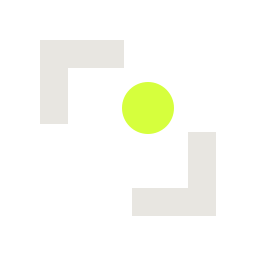

No hand detected
404
This page isn't in the lab. The tracker searched the whole frame and found nothing here.
Back to the lab
No hand detected
This page isn't in the lab. The tracker searched the whole frame and found nothing here.
Back to the lab